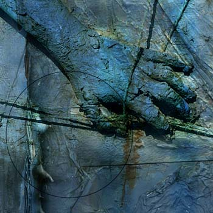

Mike Bohatch
dark art
Mike Bohatch
dark art
Mike Bohatch is a commercial illustrator for the horror industry, comprised of magazines, comics, movies, videos, books and CDs catering to the taste for horror. He calls his work horrific visual realization and surreal composition. It is award-winning and has appeared in numerous publications and CD packages as cover art and illustration. He was a professional songwriter before he turned to digital art, which he studied on-and-off in school for years. He tells us that his techniques include drawing, painting, photography, sculpture, collage and digital composition. He says much of his technique is self-learned. He is a minimalist in his use of color, often scaling his images in monocolor, sometimes in black and white. It is an effective counterpoint to his horror themes.
Cold Flesh
 |